Fuel Pump: Testing and Inspection
Fuel Pump Circuit TroubleshootingIf you suspect a problem with the fuel pump, check that the fuel pump actually runs; when it is on, you will hear some noise if you listen to the fuel fill port with the fuel fill cap removed. The fuel pump should run for 2 seconds when the ignition switch is first turned on. If the fuel pump does not make noise, check as follows:
1. Turn the ignition switch OFF.
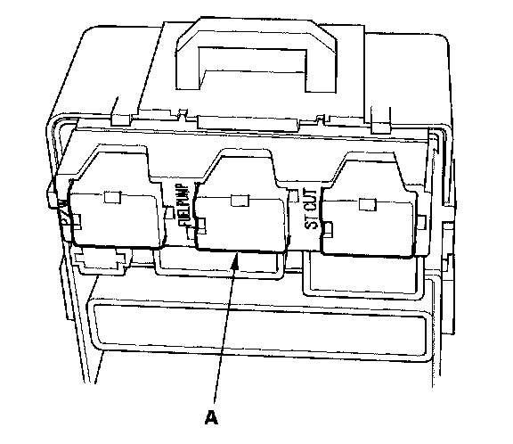
2. Remove the under-dash fuse/relay box, then remove PGM-FI main relay 2 (FUEL PUMP) (A) from the under-dash fuse/relay box.
3. Reinstall the under-dash fuse/relay box.
4. Turn the ignition switch ON (II).
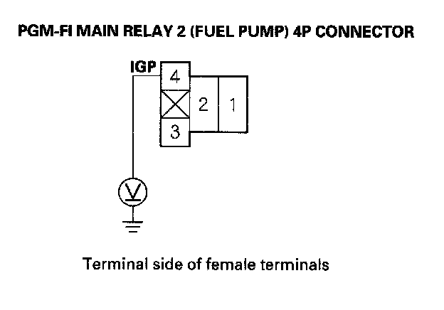
5. Measure voltage between PGM-FI main relay 2 (FUEL PUMP) 4P connector terminal No.4 and body ground.
Is there battery voltage?
YES - Go to step 12.
NO - Go to step 6.
6. Turn the ignition switch OFF.
7. Disconnect the under-hood fuse/relay box connector E (10P).
8. Disconnect C101 connector at left side of engine compartment.
9. Disconnect the under-dash fuse/relay box connector G (21P).
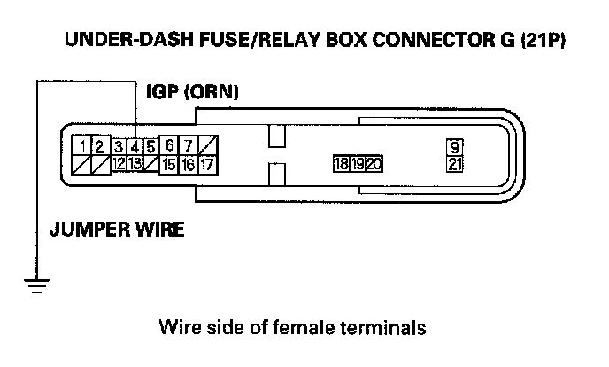
10. Connect under-dash fuse/relay box connector G (21P) terminal No.4 to body ground with a jumper wire.
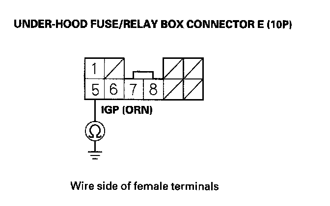
11. Check for continuity between under-hood fuse/ relay box connector E (10P) terminal No.5 and body ground.
Is there continuity?
YES
- Replace PGM-FI main relay 1.
- If needed, replace the under-hood fuse/relay box.
NO - Repair open in the wire between the underhood fuse/relay box and the under-dash fuse/relay box.
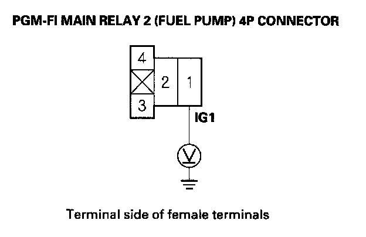
12. Measure voltage between PGM-FI main relay 2 (FUEL PUMP) 4P connector terminal No.1 and body ground.
Is there battery voltage?
YES - Go to step 13.
NO
- heck the No.2 FUEL PUMP (15 A) fuse in the under-dash fuse/relay box.
- If needed, replace the under-dash fuse/relay box.
13. Turn the ignition switch OFF.
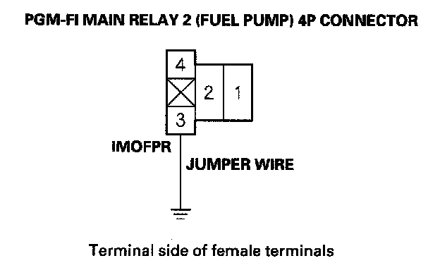
14. Connect PGM-FI main relay 2 (FUEL PUMP) 4P connector terminal No.3 to body ground with a jumper wire.
15. Jump the SCS line with the HDS.
16. Disconnect ECM connector A (44P).
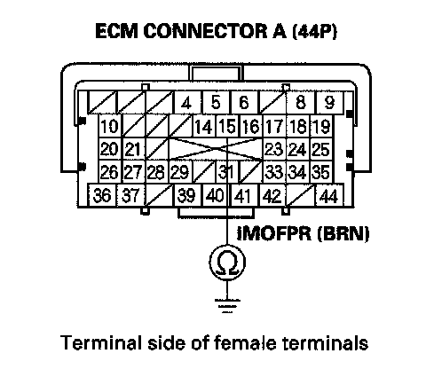
17. Check for continuity between body ground and ECM connector terminal A15.
Is there continuity?
YES - Go to step 18.
NO - Repair open in the wire between PGM-FI main relay 2 (FUEL PUMP) and the ECM (A15).
18. Remove the under-dash fuse/relay box, then reinstall PGM-FI main relay 2 (FUEL PUMP).
19. Reinstall the under-dash fuse/relay box.
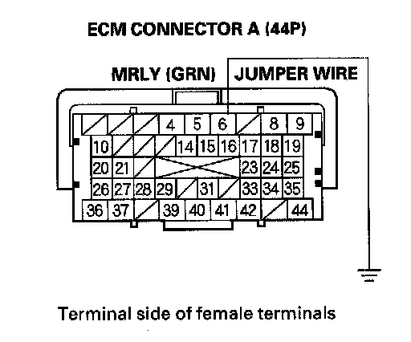
20. Connect ECM connector terminal A6 to body ground with a jumper wire.
21. Turn the ignition switch ON (II).
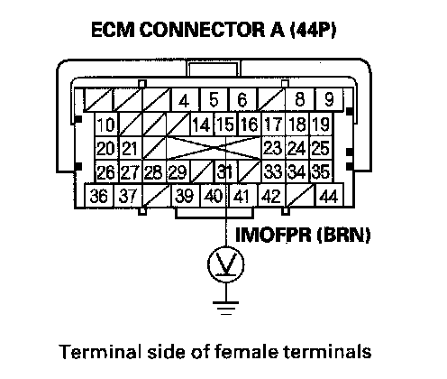
22. Measure voltage between ECM connector terminal A15 and body ground.
Is there battery voltage?
YES - Go to step 23.
NO - Replace PGM-FI main relay 2 (FUEL PUMP).
23. Turn the ignition switch OFF.
24. Reconnect ECM connector A (44P).
25. Open the SCS line with the HDS.
26. Turn the ignition switch OFF.
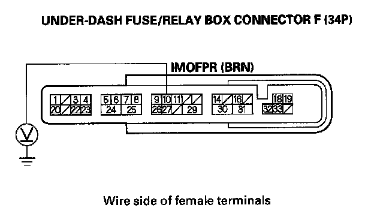
27. Turn the ignition switch ON (II), and measure voltage between under-dash fuse/relay box connector F (34P) terminal No.10 and body ground within 2 seconds.
Is there battery voltage?
YES - Update the ECM if it does not have the latest software, or substitute a known-good ECM, then recheck. If the symptom/indication goes away with a known-good ECM, replace the original ECM.
NO - Go to step 28.
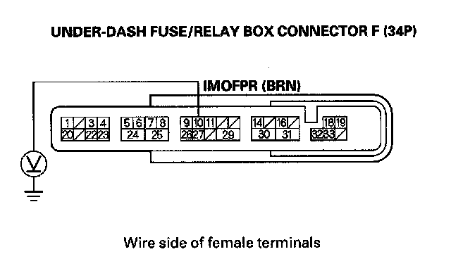
28. Turn the ignition switch ON (II), and measure voltage between under-dash fuse/relay box connector F (34P) terminal No.10 and body ground after 2 seconds.
Is there battery voltage?
YES - Go to step 29.
NO - If needed, replace the under-dash fuse/relay box, then go to step 29.
29. Turn the ignition switch OFF.
30. Remove the rear seat cushion.
31. Remove the rear floor upper cross-member, then remove the access panel from the floor.
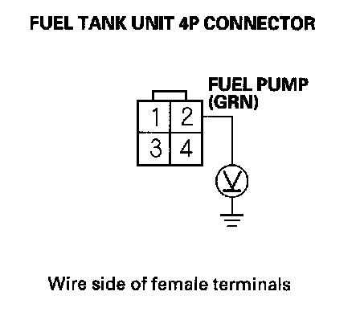
32. Turn the ignition switch ON (II), and measure voltage between fuel tank unit 4P connector terminal No.2 and body ground within 2 seconds.
Is there battery voltage?
YES - Go to step 37.
NO - Go to step 33.
33. Turn the ignition switch OFF.
34. Remove PGM-FI main relay 2 (FUEL PUMP).
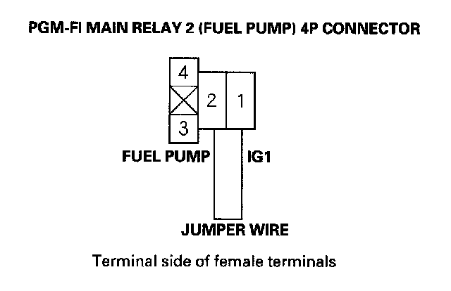
35. Connect PGM-FI main relay 2 (FUEL PUMP) 4P connector terminals No.1 and No.2 with a jumper wire.
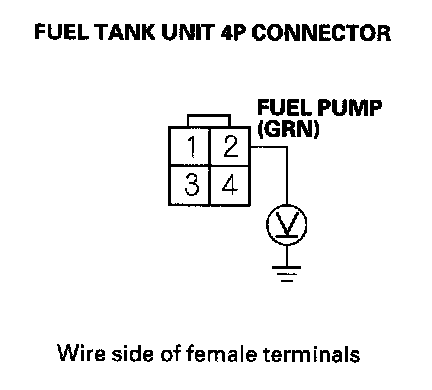
36. Turn the ignition switch ON (II), and measure voltage between fuel tank unit 4P connector terminal No.2 and body ground within 2 seconds.
Is there battery voltage?
YES - Replace PGM-FI main relay 2 (FUEL PUMP).
NO - Repair open in the wire between PGM-FI main relay 2 (FUEL PUMP) and the fuel tank unit 4P connector.
37. Turn the ignition switch OFF.
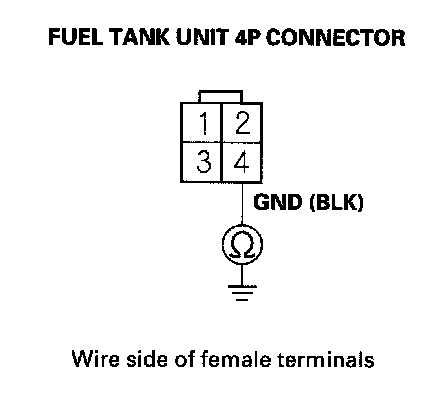
38. Check for continuity between fuel tank unit 4P connector terminal NO.4 and body ground.
Is there continuity?
YES - Replace the fuel pump.
NO - Repair open in the wire between the fuel tank unit 4P connector and G601; 4-door, 2-door.